A subgroup
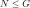
is normal, written , if
, if
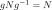
for every , where
, where
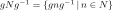
.
For the following are equivalent: (i) ;
(ii)
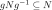
for all; (iii)  for
all .
for
all .
(i) implies (ii) trivially. Assume (ii); applying it to
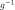
gives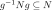
, and conjugating by turns this into
turns this into
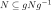
, so (i) holds. Given (i), multiplying on the right by gives , which is
(iii); and multiplying (iii) on the right by returns (i).
Let . Then
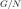
is a group under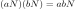
, the operation is well defined, and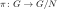
,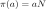
, is a surjective homomorphism with kernel .
.
Well-definedness is the only issue. Suppose
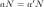
and , so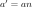
and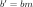
with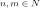
. Then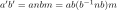
, and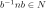
by normality, so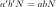
. Associativity is inherited from ;
; 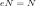
is an identity; and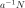
inverts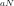
. The map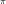
is a homomorphism by the very definition of the product, and surjective by construction. Finally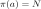
means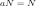
, that is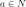
.The kernel
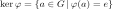
of a homomorphism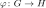
is a normal subgroup of,
and every normal subgroup is such a kernel.
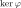
is a subgroup: , and if
, and if
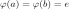
then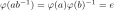
. It is normal: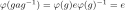
for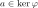
. Conversely, a normal is the kernel of the
projection by the previous theorem.
A homomorphism  is injective if and only if
is injective if and only if
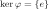
.
If is injective and
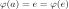
, then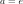
. Conversely, if the kernel is trivial and , then , so
, then , so
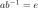
and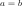
.The last two propositions together say that a homomorphism is measured by a single subgroup: how far it is from injective is , and nothing else. That is what makes the isomorphism theorems possible, and it is a phenomenon of algebra rather than of sets – for a bare map, the failure of injectivity is a whole partition, not one class of it.